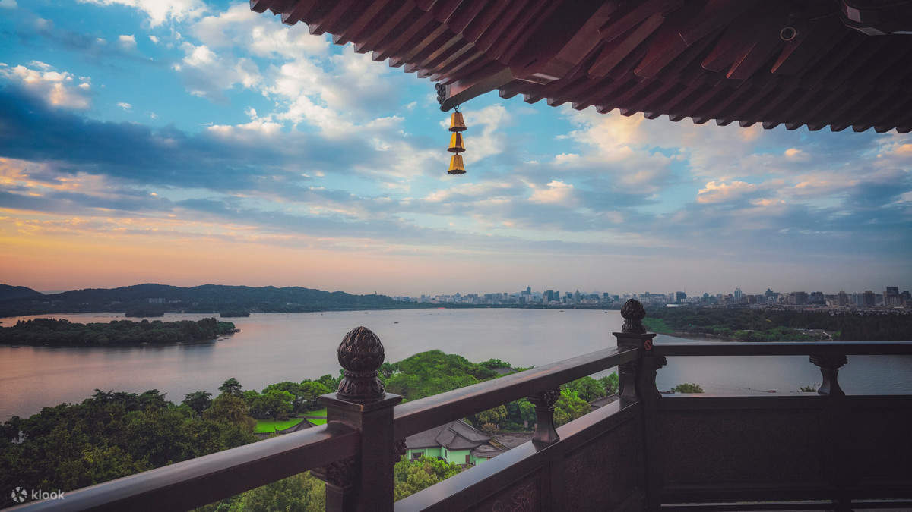

杭
Ⅰ
Hangzhou,
three nightsby the lake.
杭 州
Marco Polo called it the finest city in the world. Eight centuries on, Hangzhou still moves at the pace of a tea ceremony — willows trailing in West Lake, the scent of Longjing tea in the western hills, and the Grand Canal threading quietly past your hotel window.

West Lake at dawn — willows trailing in still water, a pagoda on the southern shore.
11:10
Touchdown at HGH
杭州萧山国际机场
Land at Hangzhou Xiaoshan, terminal 4 (international arrivals). Clear immigration — Singapore passports enter visa-free. A Didi to Cheery Dragon Canal Hotel (杭州大运河非遗文化酒店) runs around 50 minutes; better than the metro with luggage.
Set up Alipay and a VPN before you fly. Cash is rarely accepted anywhere, and Google / WhatsApp won't work without a VPN.
14:00
Hotel check-in & lunch
杭州大运河非遗文化酒店
Cheery Dragon Canal Hotel (杭州大运河非遗文化酒店) sits along the Grand Canal — a UNESCO heritage waterway that flows from Beijing all the way to Hangzhou. After settling in, find lunch nearby.
浙江省杭州市拱墅区丽水路7号 · 7 Lishui Road, Gongshu District, Hangzhou
15:30
Qiaoxi Historic Block
桥西历史街区
Right beside your hotel — Ming and Qing dynasty warehouses converted into shops, galleries and tea houses along the canal's western bank. The China Knife & Scissor Museum (中国刀剪剑博物馆), Umbrella Museum (中国伞博物馆) and Fan Museum (中国扇博物馆) are all here, all free, and unexpectedly charming.
19:00
Dinner near West Lake
武林夜市
A short Didi to Wulin or the Hubin Road area near West Lake. Get your first taste of Hangzhou cuisine — perhaps dongpo pork (东坡肉) or West Lake fish in vinegar sauce (西湖醋鱼) — and a first glimpse of the lake by night.
08:00
Bai Causeway at first light
白堤 · 断桥
Begin at Broken Bridge (断桥) — the start of Bai Causeway, named for the Tang dynasty poet Bai Juyi. Walk west through Solitary Hill Island (孤山), past Yue Fei Temple (岳王庙), then onto Su Causeway. Six kilometres of willows, lotus pads and ancient stone bridges. The morning mist is the photograph you came for.

11:30
Lunch lakeside
Try Green Tea Restaurant (绿茶) on the lake — affordable, packed with locals, signature Hangzhou flavours. Or Grandma's Home (外婆家) for the same in a slightly grander setting.
13:30
Three Pools Mirroring the Moon
三潭印月
Take the boat to the small island in the centre of the lake — the one printed on the back of every one-yuan note. Three stone pagodas rise from the water; on the night of the Mid-Autumn moon, candles are lit inside each one and the reflections multiply across the water.
Boat tickets ~¥70. The island makes the lake feel infinite.
16:00
Leifeng Pagoda at sunset
雷峰塔
Climb the pagoda on the lake's south shore for the panoramic view — West Lake, the city, and the Wuyue mountains beyond. The pagoda was rebuilt in 2002 with an elevator inside the ancient ruins, which is either a miracle or a sacrilege depending on your taste.
19:00
Hefang Old Street
河坊街
A short walk down from Leifeng — Hangzhou's restored old commercial street. Snacks, traditional medicine shops, and the smell of stinky tofu mingling with osmanthus. Dinner here is easy.

Meijiawu — terraces of Longjing, picked one leaf at a time.
08:30
Lingyin Temple
灵隐寺
Founded in 328 AD — older than almost anything you've ever set foot inside. Set in a forested valley west of the city, with monks in saffron robes, smoke from a thousand sticks of incense, and the cliffs of Feilai Feng (飞来峰) carved with Buddhist figures over a thousand years old.
A Friday morning is much quieter than a weekend. Reserve via Lingyin's WeChat the day before.
12:00
Lunch in Longjing village
龙井村
Ten minutes from Lingyin. Eat at a tea farmer's home — a simple meal of tea-smoked chicken (茶叶熏鸡), river shrimp, and seasonal greens, with fresh Longjing tea poured throughout.
14:00
Meijiawu Tea Plantation
梅家坞茶园
Walk through neat green terraces of Longjing (龙井) Dragon Well tea — China's most famous green tea. May falls right after the spring harvest, when the leaves are at their finest. Visit a tea house, watch the pan-frying, and buy a tin to take home — the difference between this and supermarket green tea is the difference between coffee and instant.

16:30
Su Causeway at sundown
苏堤春晓
Built nine hundred years ago by the poet-governor Su Dongpo. End the day where it began — but on the opposite shore, watching the lake flush pink and gold.
20:00
Optional: Grand Canal night cruise
京杭大运河夜游 · 武林门
From Wulin Gate, near your hotel. The canal's banks are lit, the boats are slow, and the families along the water at night are doing exactly what their grandparents' grandparents did in this same place.
07:30
Breakfast — xiaolongbao
小笼包早餐
Find a local xiaolongbao (小笼包) shop near the hotel. Soup dumplings done properly are a Jiangnan birthright.
09:30
Check out — Hangzhou East
杭州东站
Didi to Hangzhou East Railway Station, around thirty minutes. Aim to be at the station by 10:00 for the 10:30 train.